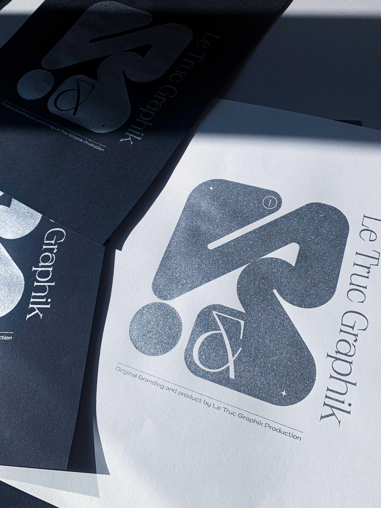
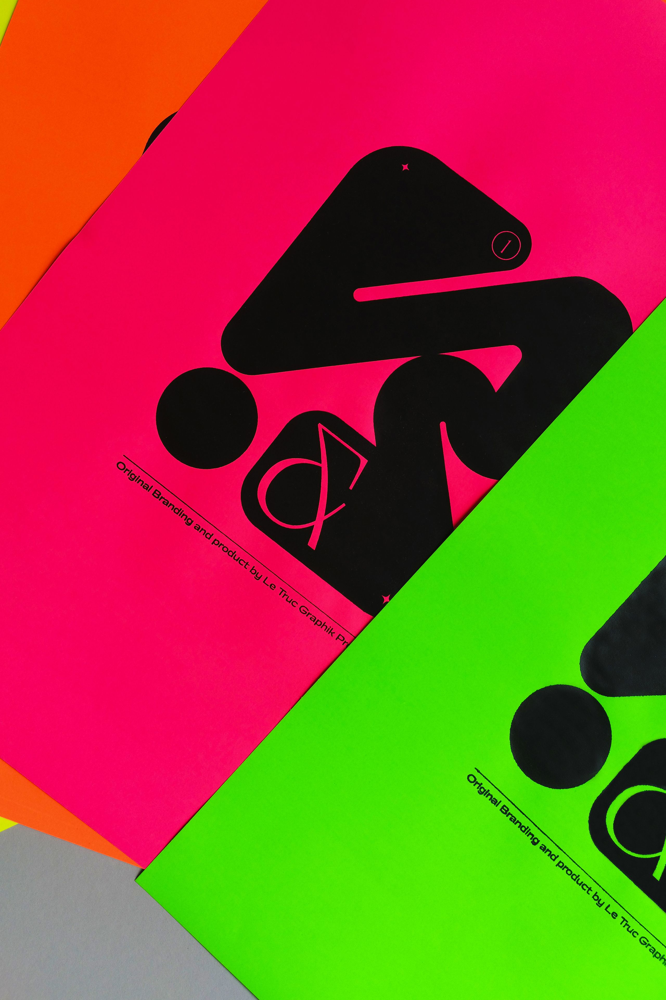
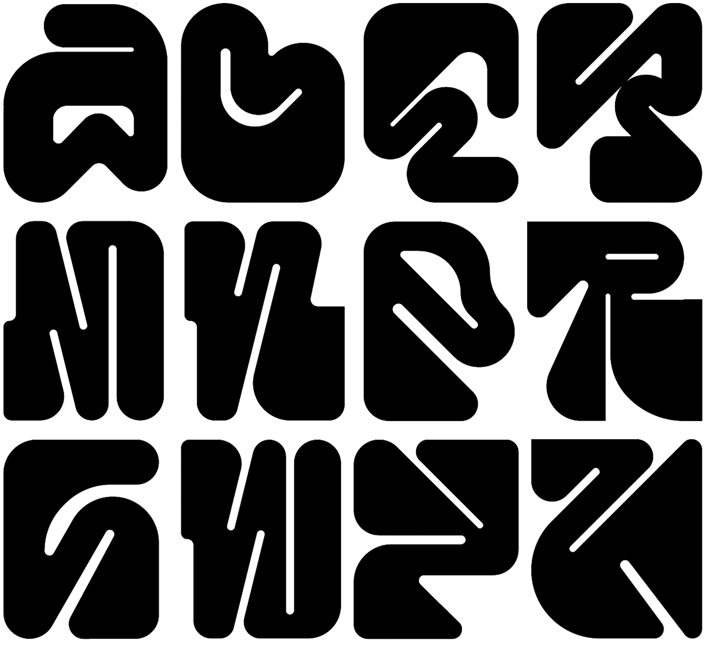
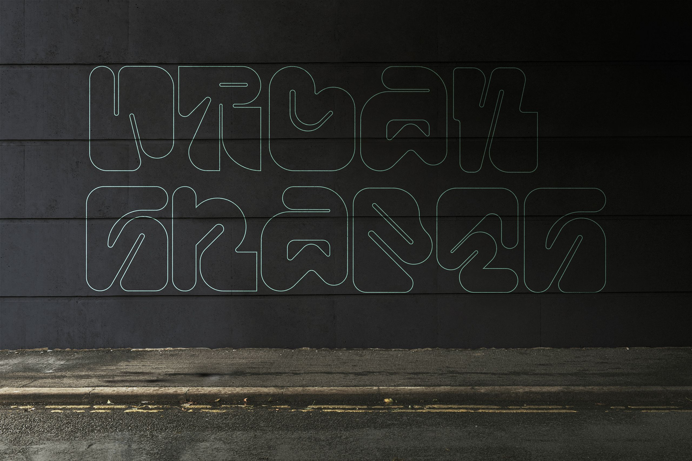
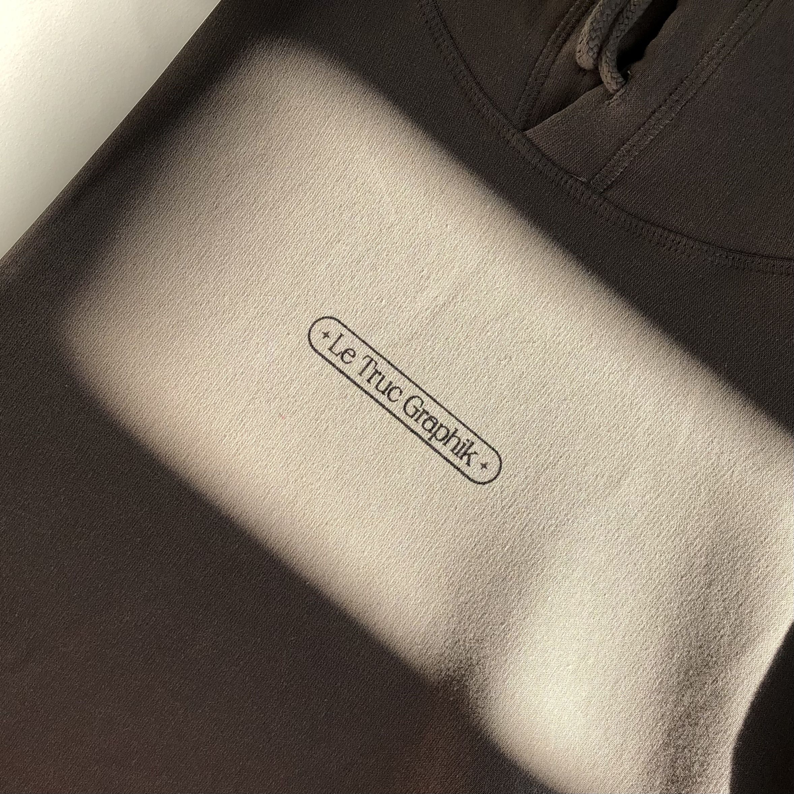
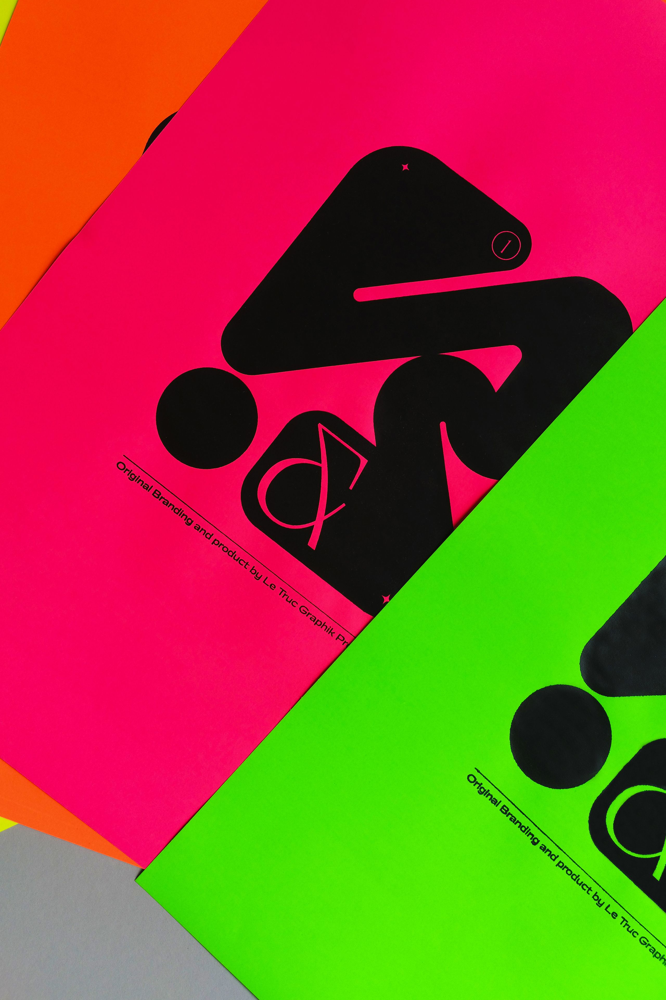
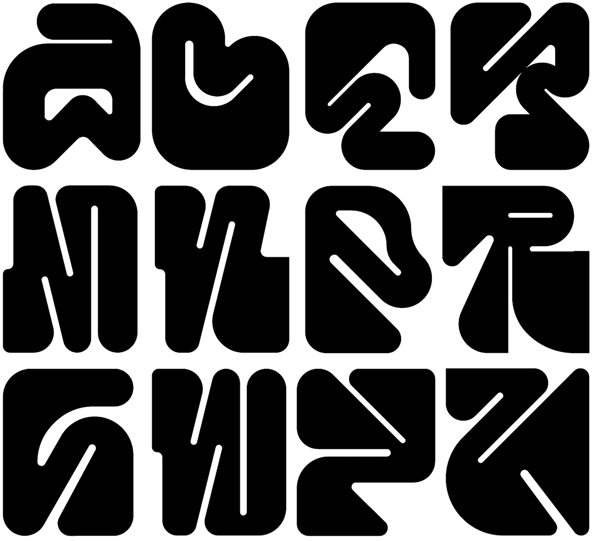
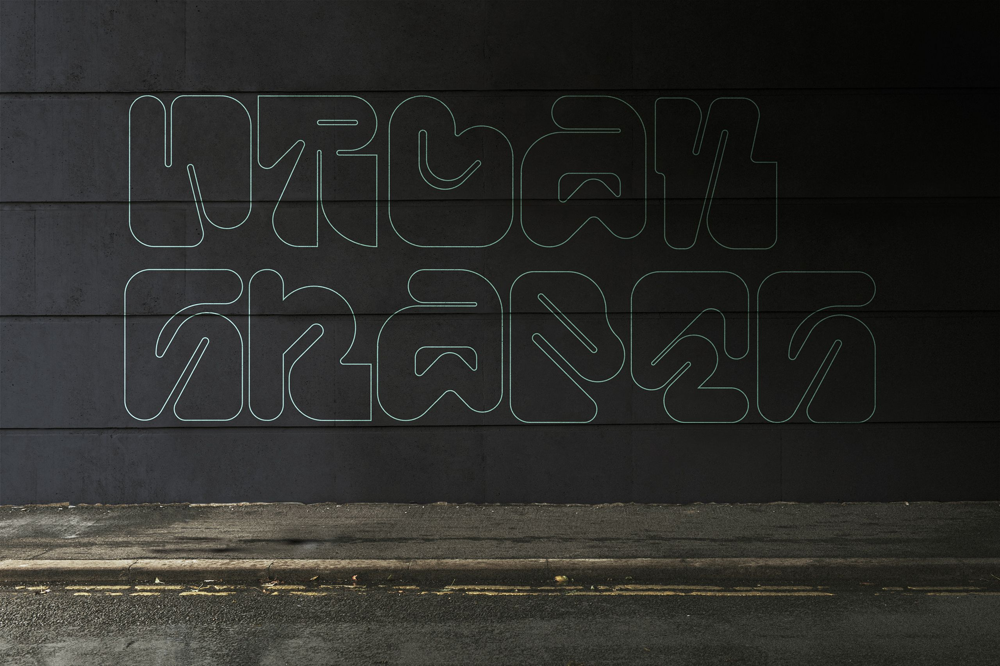
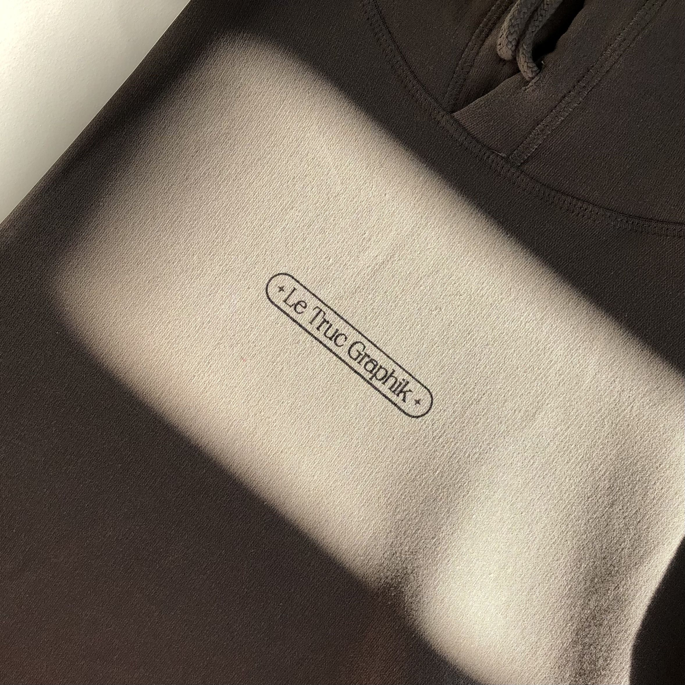

LE TRUC GRAPHIK
LTG (Le Truc Graphik) est le nom que Camille Vernhes-Chazeau et moi avons donné à notre association artistique et professionnelle. Après avoir étudié deux ans dans le même établissement, nous avons décidé de continuer notre collaboration pendant notre année de césure commune (2021-2022). Cette année a été pour nous l’opportunité de réaliser des projets avec liberté, en se soutenant et en s’enrichissant mutuellement. Nous avons notamment mis en place ensemble notre atelier de sérigraphie et de création de papier qui a été le point de départ. Nous avons également travaillé ensemble sur plusieurs projets dont l’identité graphique d’un collectif de musique lyonnais et la réalisation d’une fresque dans l’écoquartier de Darwin (Bordeaux).
 






